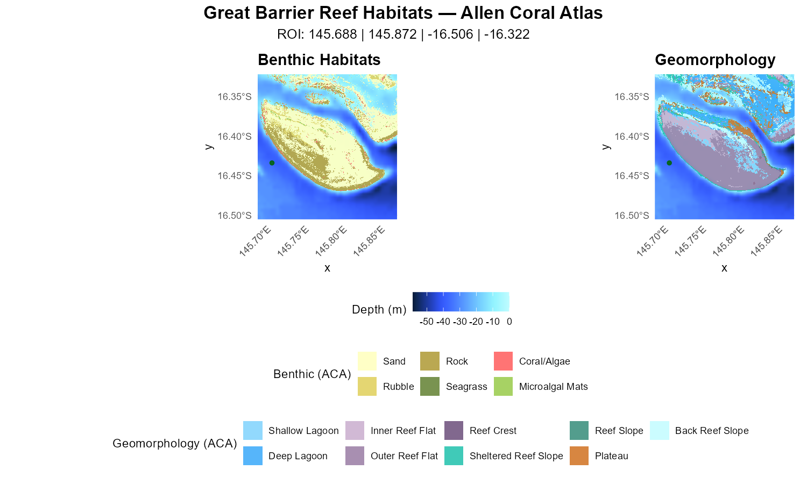
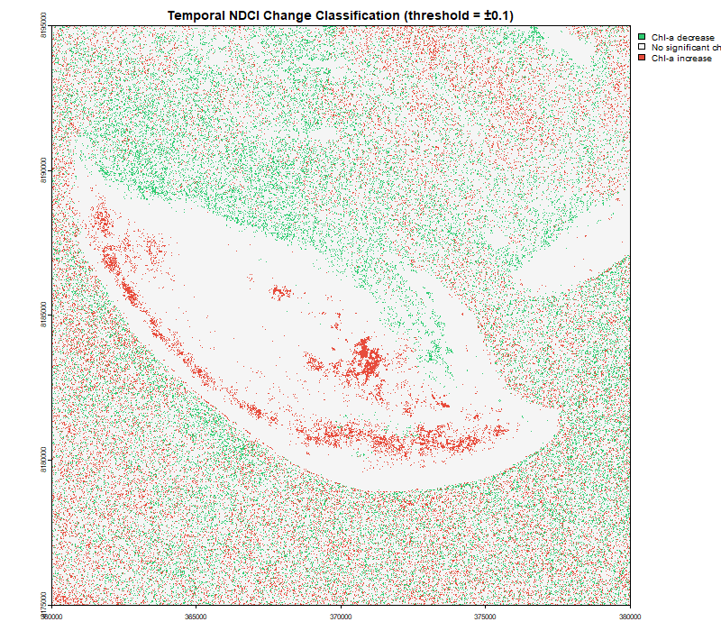

An R package for mapping and analysing reef habitats at the Great Barrier Reef using satellite remote sensing and open-source marine datasets.
Overview
ReefMappeR provides a streamlined workflow for researchers and students working with reef ecosystem data. Starting from a bounding box or a Sentinel-2 satellite image, the package automatically loads and crops bathymetry, benthic habitat, geomorphology, and seagrass data to your area of interest and produces habitat maps, depth statistics, water quality assessments, and change detection outputs for the Normalized Difference Chlorophyll Index (NDCI) and Total Suspended Sediments (TSS).
For the full package documentation and tutorials visit the ReefMappeR website.
Bundled Datasets
ReefMappeR ships with the following datasets for the Great Barrier Reef:
| Dataset | File | Source |
|---|---|---|
| Bathymetry | bathymetry_gbr.tif |
GEBCO 2024 |
| Benthic habitat tiles | benthic_gbr_*.tif |
Allen Coral Atlas |
| Geomorphic zone tiles | geomorph_gbr_*.tif |
Allen Coral Atlas |
| Seagrass polygons | seagrass_gbr.shp |
UNEP-WCMC |
The benthic and geomorphic data are stored as individual tiles. set_roi() automatically identifies and loads only the tiles that overlap with your region of interest.
Workflow
set_roi()
├── plot_habitat_map()
├── habitat_summary()
├── plot_depth_distribution()
├── calc_ndci() ──► assess_reef_change() ──► compare_ndci_change()
└── calculate_water_quality() ──► assess_reef_change() ──► compare_tss_change()Basic Usage
1. Define your region of interest
library(ReefMappeR)
s2 <- terra::rast(system.file("extdata", "Sentinel2_example.tif",
package = "ReefMappeR"))
result <- set_roi(s2 = s2)2. Visualise habitat maps
plot_habitat_map(result)
3. Summarise habitat statistics
habitat_summary(result)
4. Visualise depth distributions
plot_depth_distribution(result)
5. Analyse water quality
s2 <- terra::rast(system.file("extdata", "Sentinel2_example.tif",
package = "ReefMappeR"))
# Normalized Difference Chlorophyll Index (NDCI) — proxy for chlorophyll-a
ndci <- calc_ndci(s2)
# Total Suspended Sediments (TSS)
tss <- calculate_water_quality(s2)

6. Change detection
s2_24 <- terra::rast(system.file("extdata", "Sentinel2_2024_example.tif",
package = "ReefMappeR"))
s2_25 <- terra::rast(system.file("extdata", "Sentinel2_example.tif",
package = "ReefMappeR"))
# NDCI change detection
change_ndci <- assess_reef_change(calc_ndci(s2_24), calc_ndci(s2_25))
compare_ndci_change(change_ndci)
# TSS change detection
change_tss <- assess_reef_change(calculate_water_quality(s2_24),
calculate_water_quality(s2_25))
compare_tss_change(change_tss)

Functions
| Function | Description |
|---|---|
set_roi() |
Defines the region of interest and automatically loads and crops bathymetry, benthic habitat, geomorphic zone, and seagrass data to the specified extent |
plot_habitat_map() |
Creates a two-panel map with GEBCO bathymetry as background and Allen Coral Atlas benthic habitats and geomorphic zones overlaid |
habitat_summary() |
Computes per-class area, percentage cover, and depth statistics for all habitat classes and returns a styled summary table |
plot_depth_distribution() |
Visualises the depth range of each benthic and geomorphic habitat class as boxplots using GEBCO bathymetry |
calc_ndci() |
Calculates the Normalized Difference Chlorophyll Index (NDCI) from Sentinel-2 bands B4 and B5 as a proxy for chlorophyll-a concentration |
calculate_water_quality() |
Estimates Total Suspended Sediments (TSS) in g/m³ from Sentinel-2 surface reflectance bands |
assess_reef_change() |
Computes the pixel-wise difference between two rasters of the same variable at different time points |
compare_ndci_change() |
Classifies NDCI change into three categories and maps areas of chlorophyll-a increase, decrease, and no significant change |
compare_tss_change() |
Classifies TSS change into three categories and maps areas of sediment increase, decrease, and no significant change |
Acknowledgements
This package was developed as part of the course Introduction to Programming and Statistics for Remote Sensing and GIS in the M.Sc. EAGLE program at the University of Würzburg.